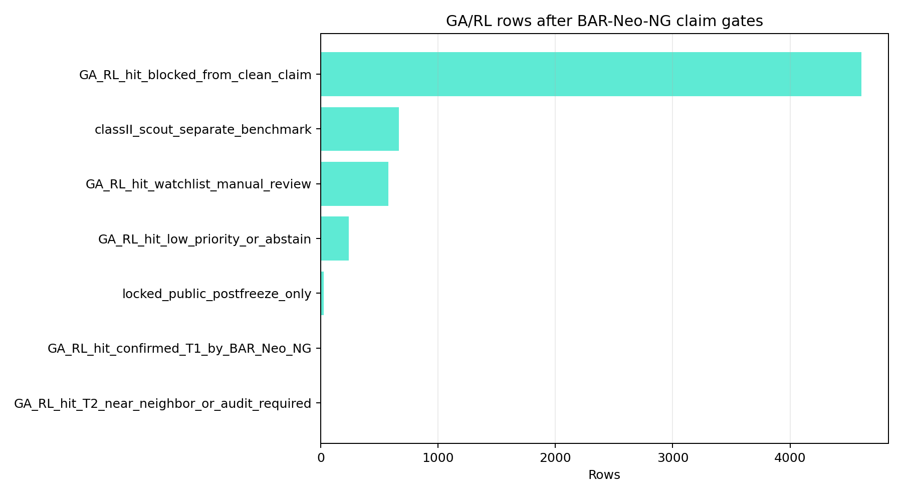
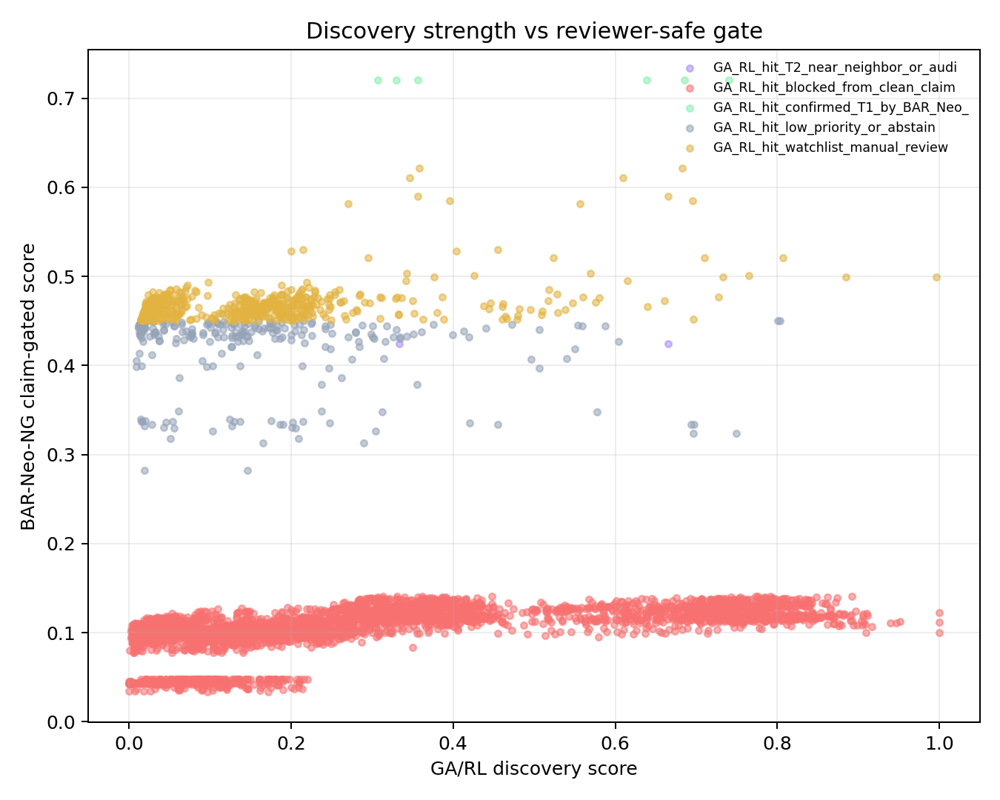

Unique T1 Handoff
| ga_rl_barneo_unique_rank | candidate_id | peptide | hla_allele_4digit | source_name | label | max_ga_rl_score_any_track | barneo_ng_score | ga_rl_barneo_priority_score | supporting_ga_rl_tracks | handoff_tier | assay_next_step | minimum_metadata_packet | claim_boundary |
|---|---|---|---|---|---|---|---|---|---|---|---|---|---|
| 1 | CNV0_02407 | KLMNIQQKL | HLA-A*02:01 | ITSNdb_main | 1.0 | 0.740475205048343 | 0.72 | 0.7292138422717543 | BioDarwin_GA_RL_academic; KG_GA_evolved | T1_GA_RL_BAR_Neo_NG_phla_assay_design | Class-I pHLA binding/stability plus immunogenicity assay after metadata intake | WT peptide; gene; mutation_id; source_protein_window; expression_tpm; vaf; clonality; patient_id; disease_context; HLA-LOH/B2M/presentation/safety fields | pHLA assay-design candidate; not patient/translational or clinical vaccine selection |
| 2 | CNV0_02504 | LLVDLAEEL | HLA-A*02:01 | ITSNdb_main | 1.0 | 0.6850608437983455 | 0.72 | 0.72 | BioDarwin_GA_RL_academic; KG_GA_evolved | T1_GA_RL_BAR_Neo_NG_phla_assay_design | Class-I pHLA binding/stability plus immunogenicity assay after metadata intake | WT peptide; gene; mutation_id; source_protein_window; expression_tpm; vaf; clonality; patient_id; disease_context; HLA-LOH/B2M/presentation/safety fields | pHLA assay-design candidate; not patient/translational or clinical vaccine selection |
| 3 | CNV0_02410 | MLGEQLFPL | HLA-A*02:01 | ITSNdb_main | 1.0 | 0.6385709171075157 | 0.72 | 0.72 | BioDarwin_GA_RL_academic; KG_GA_evolved | T1_GA_RL_BAR_Neo_NG_phla_assay_design | Class-I pHLA binding/stability plus immunogenicity assay after metadata intake | WT peptide; gene; mutation_id; source_protein_window; expression_tpm; vaf; clonality; patient_id; disease_context; HLA-LOH/B2M/presentation/safety fields | pHLA assay-design candidate; not patient/translational or clinical vaccine selection |
Confirmed T1 Rows
| ga_rl_barneo_rank_global | ga_rl_candidate_id | ga_rl_track | ga_rl_score | ga_rl_barneo_priority_score | ga_rl_barneo_decision | candidate_id | barneo_ng_score | barneo_ng_decision | source_name | hla_allele_4digit | peptide | label | leakage_risk_level | ga_rl_native_blockers | ga_rl_barneo_reason |
|---|---|---|---|---|---|---|---|---|---|---|---|---|---|---|---|
| 1 | CNV0_02407 | BioDarwin_GA_RL_academic | 0.740475205048343 | 0.7292138422717543 | GA_RL_hit_confirmed_T1_by_BAR_Neo_NG | CNV0_02407 | 0.72 | T1_phla_assay_design_candidate | ITSNdb_main | HLA-A*02:01 | KLMNIQQKL | 1.0 | low | patient_context_cap | GA/RL candidate also passes BAR-Neo-NG T1 pHLA assay-design gate |
| 2 | CNV0_02504 | BioDarwin_GA_RL_academic | 0.6850608437983455 | 0.72 | GA_RL_hit_confirmed_T1_by_BAR_Neo_NG | CNV0_02504 | 0.72 | T1_phla_assay_design_candidate | ITSNdb_main | HLA-A*02:01 | LLVDLAEEL | 1.0 | low | patient_context_cap | GA/RL candidate also passes BAR-Neo-NG T1 pHLA assay-design gate |
| 3 | CNV0_02410 | BioDarwin_GA_RL_academic | 0.6385709171075157 | 0.72 | GA_RL_hit_confirmed_T1_by_BAR_Neo_NG | CNV0_02410 | 0.72 | T1_phla_assay_design_candidate | ITSNdb_main | HLA-A*02:01 | MLGEQLFPL | 1.0 | low | patient_context_cap | GA/RL candidate also passes BAR-Neo-NG T1 pHLA assay-design gate |
| 4 | CNV0_02407 | KG_GA_evolved | 0.3566039053836162 | 0.72 | GA_RL_hit_confirmed_T1_by_BAR_Neo_NG | CNV0_02407 | 0.72 | T1_phla_assay_design_candidate | ITSNdb_main | HLA-A*02:01 | KLMNIQQKL | 1.0 | low | patient_context_cap | GA/RL candidate also passes BAR-Neo-NG T1 pHLA assay-design gate |
| 5 | CNV0_02410 | KG_GA_evolved | 0.3294462109358911 | 0.72 | GA_RL_hit_confirmed_T1_by_BAR_Neo_NG | CNV0_02410 | 0.72 | T1_phla_assay_design_candidate | ITSNdb_main | HLA-A*02:01 | MLGEQLFPL | 1.0 | low | patient_context_cap | GA/RL candidate also passes BAR-Neo-NG T1 pHLA assay-design gate |
| 6 | CNV0_02504 | KG_GA_evolved | 0.3066740767325919 | 0.72 | GA_RL_hit_confirmed_T1_by_BAR_Neo_NG | CNV0_02504 | 0.72 | T1_phla_assay_design_candidate | ITSNdb_main | HLA-A*02:01 | LLVDLAEEL | 1.0 | low | patient_context_cap | GA/RL candidate also passes BAR-Neo-NG T1 pHLA assay-design gate |
Top Bridge Rows
| ga_rl_barneo_rank_global | ga_rl_candidate_id | ga_rl_track | ga_rl_score | ga_rl_barneo_priority_score | ga_rl_barneo_decision | candidate_id | barneo_ng_score | barneo_ng_decision | source_name | hla_allele_4digit | peptide | label | leakage_risk_level | ga_rl_native_blockers | ga_rl_barneo_reason |
|---|---|---|---|---|---|---|---|---|---|---|---|---|---|---|---|
| 1 | CNV0_02407 | BioDarwin_GA_RL_academic | 0.740475205048343 | 0.7292138422717543 | GA_RL_hit_confirmed_T1_by_BAR_Neo_NG | CNV0_02407 | 0.72 | T1_phla_assay_design_candidate | ITSNdb_main | HLA-A*02:01 | KLMNIQQKL | 1.0 | low | patient_context_cap | GA/RL candidate also passes BAR-Neo-NG T1 pHLA assay-design gate |
| 2 | CNV0_02504 | BioDarwin_GA_RL_academic | 0.6850608437983455 | 0.72 | GA_RL_hit_confirmed_T1_by_BAR_Neo_NG | CNV0_02504 | 0.72 | T1_phla_assay_design_candidate | ITSNdb_main | HLA-A*02:01 | LLVDLAEEL | 1.0 | low | patient_context_cap | GA/RL candidate also passes BAR-Neo-NG T1 pHLA assay-design gate |
| 3 | CNV0_02410 | BioDarwin_GA_RL_academic | 0.6385709171075157 | 0.72 | GA_RL_hit_confirmed_T1_by_BAR_Neo_NG | CNV0_02410 | 0.72 | T1_phla_assay_design_candidate | ITSNdb_main | HLA-A*02:01 | MLGEQLFPL | 1.0 | low | patient_context_cap | GA/RL candidate also passes BAR-Neo-NG T1 pHLA assay-design gate |
| 4 | CNV0_02407 | KG_GA_evolved | 0.3566039053836162 | 0.72 | GA_RL_hit_confirmed_T1_by_BAR_Neo_NG | CNV0_02407 | 0.72 | T1_phla_assay_design_candidate | ITSNdb_main | HLA-A*02:01 | KLMNIQQKL | 1.0 | low | patient_context_cap | GA/RL candidate also passes BAR-Neo-NG T1 pHLA assay-design gate |
| 5 | CNV0_02410 | KG_GA_evolved | 0.3294462109358911 | 0.72 | GA_RL_hit_confirmed_T1_by_BAR_Neo_NG | CNV0_02410 | 0.72 | T1_phla_assay_design_candidate | ITSNdb_main | HLA-A*02:01 | MLGEQLFPL | 1.0 | low | patient_context_cap | GA/RL candidate also passes BAR-Neo-NG T1 pHLA assay-design gate |
| 6 | CNV0_02504 | KG_GA_evolved | 0.3066740767325919 | 0.72 | GA_RL_hit_confirmed_T1_by_BAR_Neo_NG | CNV0_02504 | 0.72 | T1_phla_assay_design_candidate | ITSNdb_main | HLA-A*02:01 | LLVDLAEEL | 1.0 | low | patient_context_cap | GA/RL candidate also passes BAR-Neo-NG T1 pHLA assay-design gate |
| 7 | CNV0_02448 | BioDarwin_GA_RL_academic | 0.9963334617606686 | 0.62 | GA_RL_hit_watchlist_manual_review | CNV0_02448 | 0.49914095538355 | watchlist_manual_review | ITSNdb_main | HLA-A*02:01 | ILDKVLVHL | 1.0 | low | patient_context_cap | GA/RL candidate is plausible but not a clean T1 claim under BAR-Neo-NG |
| 8 | CNV0_02448 | KG_GA_evolved | 0.8850306381893452 | 0.62 | GA_RL_hit_watchlist_manual_review | CNV0_02448 | 0.49914095538355 | watchlist_manual_review | ITSNdb_main | HLA-A*02:01 | ILDKVLVHL | 1.0 | low | patient_context_cap | GA/RL candidate is plausible but not a clean T1 claim under BAR-Neo-NG |
| 9 | CNV0_02708 | BioDarwin_GA_RL_academic | 0.8067760996782944 | 0.62 | GA_RL_hit_watchlist_manual_review | CNV0_02708 | 0.5210868340234445 | watchlist_manual_review | ITSNdb_Val | HLA-A*02:01 | ALDPLLLRI | 1.0 | low | patient_context_cap | GA/RL candidate is plausible but not a clean T1 claim under BAR-Neo-NG |
| 10 | CNV0_02408 | BioDarwin_GA_RL_academic | 0.6954120761816477 | 0.62 | GA_RL_hit_watchlist_manual_review | CNV0_02408 | 0.584787632904522 | watchlist_manual_review | ITSNdb_main | HLA-A*02:01 | FLYNLLTRV | 1.0 | low | patient_context_cap | GA/RL candidate is plausible but not a clean T1 claim under BAR-Neo-NG |
| 11 | CNV0_02503 | BioDarwin_GA_RL_academic | 0.682240326889333 | 0.62 | GA_RL_hit_watchlist_manual_review | CNV0_02503 | 0.6211774398961772 | watchlist_manual_review | ITSNdb_main | HLA-A*02:01 | RLSDFSEQL | 1.0 | low | patient_context_cap | GA/RL candidate is plausible but not a clean T1 claim under BAR-Neo-NG |
| 12 | CNV0_02509 | BioDarwin_GA_RL_academic | 0.6656574646966729 | 0.62 | GA_RL_hit_watchlist_manual_review | CNV0_02509 | 0.5896798109660857 | watchlist_manual_review | ITSNdb_main | HLA-A*02:01 | SLLRSLENV | 1.0 | low | patient_context_cap | GA/RL candidate is plausible but not a clean T1 claim under BAR-Neo-NG |
| 13 | CNV0_02452 | BioDarwin_GA_RL_academic | 0.7645068988555743 | 0.6193374959071717 | GA_RL_hit_watchlist_manual_review | CNV0_02452 | 0.5005625298584785 | watchlist_manual_review | ITSNdb_main | HLA-A*02:01 | LLDGFLATV | 1.0 | low | patient_context_cap | GA/RL candidate is plausible but not a clean T1 claim under BAR-Neo-NG |
| 14 | CNV0_02409 | BioDarwin_GA_RL_academic | 0.6099365120331641 | 0.6105353846367305 | GA_RL_hit_watchlist_manual_review | CNV0_02409 | 0.6110253713123757 | watchlist_manual_review | ITSNdb_main | HLA-A*02:01 | IILVAVPHV | 1.0 | low | patient_context_cap | GA/RL candidate is plausible but not a clean T1 claim under BAR-Neo-NG |
| 15 | CNV0_02708 | KG_GA_evolved | 0.7095978926609995 | 0.6059168104103443 | GA_RL_hit_watchlist_manual_review | CNV0_02708 | 0.5210868340234445 | watchlist_manual_review | ITSNdb_Val | HLA-A*02:01 | ALDPLLLRI | 1.0 | low | patient_context_cap | GA/RL candidate is plausible but not a clean T1 claim under BAR-Neo-NG |
| 16 | CNV0_02397 | BioDarwin_GA_RL_academic | 0.7325611279329195 | 0.6041999832429203 | GA_RL_hit_watchlist_manual_review | CNV0_02397 | 0.4991772284965573 | watchlist_manual_review | ITSNdb_main | HLA-B*35:03 | LPIQYEPVL | 0.0 | low | patient_context_cap | GA/RL candidate is plausible but not a clean T1 claim under BAR-Neo-NG |
| 17 | CNV0_02400 | BioDarwin_GA_RL_academic | 0.7277394181240389 | 0.5897964242395575 | GA_RL_hit_watchlist_manual_review | CNV0_02400 | 0.476933974697709 | watchlist_manual_review | ITSNdb_main | HLA-A*25:01 | ETSKQVTRW | 0.0 | low | patient_context_cap;presentation_cap | GA/RL candidate is plausible but not a clean T1 claim under BAR-Neo-NG |
| 18 | CNV0_02420 | BioDarwin_GA_RL_academic | 0.5567401010550702 | 0.570321185145227 | GA_RL_hit_watchlist_manual_review | CNV0_02420 | 0.5814329812189916 | watchlist_manual_review | ITSNdb_main | HLA-A*02:01 | KLANPLPYT | 0.0 | low | patient_context_cap | GA/RL candidate is plausible but not a clean T1 claim under BAR-Neo-NG |
| 19 | CNV0_02450 | BioDarwin_GA_RL_academic | 0.6967142404322854 | 0.5619275220100954 | GA_RL_hit_watchlist_manual_review | CNV0_02450 | 0.4516474796646674 | watchlist_manual_review | ITSNdb_main | HLA-B*44:03 | KELEGILLL | 1.0 | low | patient_context_cap;presentation_cap | GA/RL candidate is plausible but not a clean T1 claim under BAR-Neo-NG |
| 20 | CNV0_02572 | BioDarwin_GA_RL_academic | 0.6604927366318768 | 0.5570891053333462 | GA_RL_hit_watchlist_manual_review | CNV0_02572 | 0.472486134270912 | watchlist_manual_review | ITSNdb_main | HLA-A*03:01 | TTYSPIGEK | 0.0 | low | patient_context_cap | GA/RL candidate is plausible but not a clean T1 claim under BAR-Neo-NG |
| 21 | CNV0_02424 | BioDarwin_GA_RL_academic | 0.615437041213616 | 0.5493144453609036 | GA_RL_hit_watchlist_manual_review | CNV0_02424 | 0.4952141396632296 | watchlist_manual_review | ITSNdb_main | HLA-A*02:01 | LADEAEVYL | 1.0 | low | patient_context_cap | GA/RL candidate is plausible but not a clean T1 claim under BAR-Neo-NG |
| 22 | CNV0_02405 | BioDarwin_GA_RL_academic | 0.63954384216205 | 0.5439050379526998 | GA_RL_hit_watchlist_manual_review | CNV0_02405 | 0.4656551072359588 | watchlist_manual_review | ITSNdb_main | HLA-A*02:01 | KMIGNHLWV | 1.0 | low | patient_context_cap | GA/RL candidate is plausible but not a clean T1 claim under BAR-Neo-NG |
| 23 | CNV0_02709 | BioDarwin_GA_RL_academic | 0.5690678877949433 | 0.532797485370547 | GA_RL_hit_watchlist_manual_review | CNV0_02709 | 0.5031217015687682 | watchlist_manual_review | ITSNdb_Val | HLA-A*02:01 | ALPVALPSL | 1.0 | low | patient_context_cap | GA/RL candidate is plausible but not a clean T1 claim under BAR-Neo-NG |
| 24 | CNV0_02480 | BioDarwin_GA_RL_academic | 0.6648970178597445 | 0.5324484562890018 | GA_RL_hit_T2_near_neighbor_or_audit_required | CNV0_02480 | 0.4240814513674851 | T2_resolve_before_claim | ITSNdb_main | HLA-A*01:01 | ILDTAGKEEY | 1.0 | medium | patient_context_cap | GA/RL candidate needs near-neighbor/source/overlap resolution before claim |
| 25 | CNV0_02460 | BioDarwin_GA_RL_academic | 0.5800882362438563 | 0.5228645529531852 | GA_RL_hit_watchlist_manual_review | CNV0_02460 | 0.4760451757153635 | watchlist_manual_review | ITSNdb_main | HLA-A*02:01 | GIVEGLITTV | 1.0 | low | patient_context_cap | GA/RL candidate is plausible but not a clean T1 claim under BAR-Neo-NG |
| 26 | CNV0_02508 | BioDarwin_GA_RL_academic | 0.523531271914916 | 0.5219230602141406 | GA_RL_hit_watchlist_manual_review | CNV0_02508 | 0.5206072506407788 | watchlist_manual_review | ITSNdb_main | HLA-A*02:01 | YILKYSVFL | 1.0 | low | patient_context_cap | GA/RL candidate is plausible but not a clean T1 claim under BAR-Neo-NG |
| 27 | CNV0_02543 | BioDarwin_GA_RL_academic | 0.5756582049946187 | 0.5178387380865284 | GA_RL_hit_watchlist_manual_review | CNV0_02543 | 0.4705319015253635 | watchlist_manual_review | ITSNdb_main | HLA-A*24:02 | VYVAKLHDI | 0.0 | low | patient_context_cap | GA/RL candidate is plausible but not a clean T1 claim under BAR-Neo-NG |
| 28 | CNV0_02401 | BioDarwin_GA_RL_academic | 0.5605250989335734 | 0.514664086350014 | GA_RL_hit_watchlist_manual_review | CNV0_02401 | 0.4771414396907382 | watchlist_manual_review | ITSNdb_main | HLA-A*01:01 | YIDERFERY | 0.0 | low | patient_context_cap | GA/RL candidate is plausible but not a clean T1 claim under BAR-Neo-NG |
| 29 | CNV0_02411 | BioDarwin_GA_RL_academic | 0.547617380224915 | 0.5051791826392504 | GA_RL_hit_watchlist_manual_review | CNV0_02411 | 0.470457020978252 | watchlist_manual_review | ITSNdb_main | HLA-A*02:01 | QTIDNIVFL | 0.0 | low | patient_context_cap | GA/RL candidate is plausible but not a clean T1 claim under BAR-Neo-NG |
| 30 | CNV0_02503 | KG_GA_evolved | 0.3582149523071683 | 0.5028443204811233 | GA_RL_hit_watchlist_manual_review | CNV0_02503 | 0.6211774398961772 | watchlist_manual_review | ITSNdb_main | HLA-A*02:01 | RLSDFSEQL | 1.0 | low | patient_context_cap | GA/RL candidate is plausible but not a clean T1 claim under BAR-Neo-NG |
| 31 | CNV0_02518 | BioDarwin_GA_RL_academic | 0.5277764028845897 | 0.5014066612327421 | GA_RL_hit_watchlist_manual_review | CNV0_02518 | 0.4798314180630487 | watchlist_manual_review | ITSNdb_main | HLA-A*02:01 | FLFELIPEP | 0.0 | low | patient_context_cap | GA/RL candidate is plausible but not a clean T1 claim under BAR-Neo-NG |
| 32 | CNV0_02458 | BioDarwin_GA_RL_academic | 0.517704159747831 | 0.4998689360969909 | GA_RL_hit_watchlist_manual_review | CNV0_02458 | 0.4852764803826672 | watchlist_manual_review | ITSNdb_main | HLA-A*02:01 | IIGAGPAEV | 0.0 | low | patient_context_cap | GA/RL candidate is plausible but not a clean T1 claim under BAR-Neo-NG |
| 33 | CNV0_02408 | KG_GA_evolved | 0.3959007068721462 | 0.4997885161899529 | GA_RL_hit_watchlist_manual_review | CNV0_02408 | 0.584787632904522 | watchlist_manual_review | ITSNdb_main | HLA-A*02:01 | FLYNLLTRV | 1.0 | low | patient_context_cap | GA/RL candidate is plausible but not a clean T1 claim under BAR-Neo-NG |
| 34 | CNV0_02592 | BioDarwin_GA_RL_academic | 0.5382772233647707 | 0.49649316917622943 | GA_RL_hit_watchlist_manual_review | CNV0_02592 | 0.462306215749241 | watchlist_manual_review | ITSNdb_main | HLA-B*27:05 | KRTNVGILK | 0.0 | low | patient_context_cap | GA/RL candidate is plausible but not a clean T1 claim under BAR-Neo-NG |
| 35 | CNV0_02507 | BioDarwin_GA_RL_academic | 0.4551642847828414 | 0.49625140449604127 | GA_RL_hit_watchlist_manual_review | CNV0_02507 | 0.5298681388068411 | watchlist_manual_review | ITSNdb_main | HLA-A*02:01 | WVLALFDEV | 1.0 | low | patient_context_cap | GA/RL candidate is plausible but not a clean T1 claim under BAR-Neo-NG |
| 36 | CNV0_02513 | BioDarwin_GA_RL_academic | 0.5172072464661703 | 0.4924586327109572 | GA_RL_hit_watchlist_manual_review | CNV0_02513 | 0.4722097669112373 | watchlist_manual_review | ITSNdb_main | HLA-A*02:01 | VLQEATICV | 0.0 | low | patient_context_cap | GA/RL candidate is plausible but not a clean T1 claim under BAR-Neo-NG |
| 37 | CNV0_02409 | KG_GA_evolved | 0.3459022227810971 | 0.4917199544733003 | GA_RL_hit_watchlist_manual_review | CNV0_02409 | 0.6110253713123757 | watchlist_manual_review | ITSNdb_main | HLA-A*02:01 | IILVAVPHV | 1.0 | low | patient_context_cap | GA/RL candidate is plausible but not a clean T1 claim under BAR-Neo-NG |
| 38 | CNV0_02578 | BioDarwin_GA_RL_academic | 0.5291139269291253 | 0.4906200446866398 | GA_RL_hit_watchlist_manual_review | CNV0_02578 | 0.459125050124606 | watchlist_manual_review | ITSNdb_main | HLA-A*03:01 | KVMTDPSRK | 0.0 | low | patient_context_cap | GA/RL candidate is plausible but not a clean T1 claim under BAR-Neo-NG |
| 39 | CNV0_02509 | KG_GA_evolved | 0.3566825447806725 | 0.48483104118264975 | GA_RL_hit_watchlist_manual_review | CNV0_02509 | 0.5896798109660857 | watchlist_manual_review | ITSNdb_main | HLA-A*02:01 | SLLRSLENV | 1.0 | low | patient_context_cap | GA/RL candidate is plausible but not a clean T1 claim under BAR-Neo-NG |
| 40 | CNV0_02416 | BioDarwin_GA_RL_academic | 0.5095194711502337 | 0.482777576067029 | GA_RL_hit_watchlist_manual_review | CNV0_02416 | 0.4608978437262251 | watchlist_manual_review | ITSNdb_main | HLA-A*02:01 | VLLRALPVL | 0.0 | low | patient_context_cap | GA/RL candidate is plausible but not a clean T1 claim under BAR-Neo-NG |
High-GA Blocked Audit
| ga_rl_barneo_rank_global | ga_rl_candidate_id | ga_rl_track | ga_rl_score | ga_rl_barneo_priority_score | ga_rl_barneo_decision | candidate_id | barneo_ng_score | barneo_ng_decision | source_name | hla_allele_4digit | peptide | label | leakage_risk_level | ga_rl_native_blockers | ga_rl_barneo_reason | audit_priority | audit_question |
|---|---|---|---|---|---|---|---|---|---|---|---|---|---|---|---|---|---|
| 7 | CNV0_02448 | BioDarwin_GA_RL_academic | 0.9963334617606686 | 0.62 | GA_RL_hit_watchlist_manual_review | CNV0_02448 | 0.49914095538355 | watchlist_manual_review | ITSNdb_main | HLA-A*02:01 | ILDKVLVHL | 1.0 | low | patient_context_cap | GA/RL candidate is plausible but not a clean T1 claim under BAR-Neo-NG | B_watchlist_high_GA_manual_review | Does added metadata/assay evidence move this from watchlist to T1? |
| 15 | CNV0_02708 | KG_GA_evolved | 0.7095978926609995 | 0.6059168104103443 | GA_RL_hit_watchlist_manual_review | CNV0_02708 | 0.5210868340234445 | watchlist_manual_review | ITSNdb_Val | HLA-A*02:01 | ALDPLLLRI | 1.0 | low | patient_context_cap | GA/RL candidate is plausible but not a clean T1 claim under BAR-Neo-NG | B_watchlist_high_GA_manual_review | Does added metadata/assay evidence move this from watchlist to T1? |
| 49 | CNV0_02405 | KG_GA_evolved | 0.4601441623934386 | 0.46317518205682473 | GA_RL_hit_watchlist_manual_review | CNV0_02405 | 0.4656551072359588 | watchlist_manual_review | ITSNdb_main | HLA-A*02:01 | KMIGNHLWV | 1.0 | low | patient_context_cap | GA/RL candidate is plausible but not a clean T1 claim under BAR-Neo-NG | B_watchlist_high_GA_manual_review | Does added metadata/assay evidence move this from watchlist to T1? |
| 798 | CNV0_00688 | BioDarwin_GA_RL_academic | 1.0 | 0.25 | GA_RL_hit_blocked_from_clean_claim | CNV0_00688 | 0.1228513046624852 | blocked_from_clean_claim | CEDAR | HLA-A*24:02 | YYYGIKDLATVFF | 1.0 | high | high_leakage;patient_context_cap | GA/RL score is not claim-safe because leakage/exact-overlap gate blocks it | A_blocked_high_GA_review_leakage_or_overlap | Is this GA/RL signal explained by leakage, exact/near overlap, or source reuse? |
| 799 | CNV0_01132 | KG_GA_evolved | 1.0 | 0.25 | GA_RL_hit_blocked_from_clean_claim | CNV0_01132 | 0.0997746997005512 | blocked_from_clean_claim | NEPdb | HLA-C*08:02 | GADGVGKSAL | 1.0 | high | high_leakage;patient_context_cap;presentation_cap | GA/RL score is not claim-safe because leakage/exact-overlap gate blocks it | A_blocked_high_GA_review_leakage_or_overlap | Is this GA/RL signal explained by leakage, exact/near overlap, or source reuse? |
| 800 | CNV0_00784 | BioDarwin_GA_RL_academic | 0.9995589461155252 | 0.25 | GA_RL_hit_blocked_from_clean_claim | CNV0_00784 | 0.1115277221944853 | blocked_from_clean_claim | CEDAR | HLA-A*68:02 | ETVNALISDQKL | 1.0 | high | high_leakage;patient_context_cap | GA/RL score is not claim-safe because leakage/exact-overlap gate blocks it | A_blocked_high_GA_review_leakage_or_overlap | Is this GA/RL signal explained by leakage, exact/near overlap, or source reuse? |
| 801 | CNV0_00169 | BioDarwin_GA_RL_academic | 0.951300153288953 | 0.25 | GA_RL_hit_blocked_from_clean_claim | CNV0_00169 | 0.1123255977002174 | blocked_from_clean_claim | CEDAR | HLA-B*37:01 | AALEDTLAETEAR | 1.0 | high | high_leakage;patient_context_cap | GA/RL score is not claim-safe because leakage/exact-overlap gate blocks it | A_blocked_high_GA_review_leakage_or_overlap | Is this GA/RL signal explained by leakage, exact/near overlap, or source reuse? |
| 802 | CNV0_00804 | BioDarwin_GA_RL_academic | 0.9467883315559772 | 0.25 | GA_RL_hit_blocked_from_clean_claim | CNV0_00804 | 0.1113196557313701 | blocked_from_clean_claim | CEDAR | HLA-B*27:09 | SRSYTSGPGSRISSS | 1.0 | high | high_leakage;patient_context_cap | GA/RL score is not claim-safe because leakage/exact-overlap gate blocks it | A_blocked_high_GA_review_leakage_or_overlap | Is this GA/RL signal explained by leakage, exact/near overlap, or source reuse? |
| 803 | CNV0_00874 | BioDarwin_GA_RL_academic | 0.9394240345839056 | 0.25 | GA_RL_hit_blocked_from_clean_claim | CNV0_00874 | 0.1111812984598028 | blocked_from_clean_claim | CEDAR | HLA-B*54:01 | FPSEYLSSHLEA | 1.0 | high | high_leakage;patient_context_cap | GA/RL score is not claim-safe because leakage/exact-overlap gate blocks it | A_blocked_high_GA_review_leakage_or_overlap | Is this GA/RL signal explained by leakage, exact/near overlap, or source reuse? |
| 804 | CNV0_00791 | BioDarwin_GA_RL_academic | 0.916560488157982 | 0.25 | GA_RL_hit_blocked_from_clean_claim | CNV0_00791 | 0.1069311156775471 | blocked_from_clean_claim | CEDAR | HLA-A*68:02 | EVIDKNSGGWWYV | 1.0 | high | high_leakage;patient_context_cap | GA/RL score is not claim-safe because leakage/exact-overlap gate blocks it | A_blocked_high_GA_review_leakage_or_overlap | Is this GA/RL signal explained by leakage, exact/near overlap, or source reuse? |
| 805 | CNV0_00821 | BioDarwin_GA_RL_academic | 0.9113977784903228 | 0.25 | GA_RL_hit_blocked_from_clean_claim | CNV0_00821 | 0.1193109980808185 | blocked_from_clean_claim | CEDAR | HLA-B*53:01 | NADPASHEIW | 1.0 | high | high_leakage;patient_context_cap | GA/RL score is not claim-safe because leakage/exact-overlap gate blocks it | A_blocked_high_GA_review_leakage_or_overlap | Is this GA/RL signal explained by leakage, exact/near overlap, or source reuse? |
| 806 | CNV0_00771 | BioDarwin_GA_RL_academic | 0.9106336737103204 | 0.25 | GA_RL_hit_blocked_from_clean_claim | CNV0_00771 | 0.1217101126905278 | blocked_from_clean_claim | CEDAR | HLA-A*24:02 | YYGTGETFLYTF | 1.0 | high | high_leakage;patient_context_cap | GA/RL score is not claim-safe because leakage/exact-overlap gate blocks it | A_blocked_high_GA_review_leakage_or_overlap | Is this GA/RL signal explained by leakage, exact/near overlap, or source reuse? |
| 808 | CNV0_00245 | BioDarwin_GA_RL_academic | 0.9086190538053576 | 0.25 | GA_RL_hit_blocked_from_clean_claim | CNV0_00245 | 0.1095548153716551 | blocked_from_clean_claim | CEDAR | HLA-A*11:01 | ATSPHLESLLK | 1.0 | high | high_leakage;patient_context_cap | GA/RL score is not claim-safe because leakage/exact-overlap gate blocks it | A_blocked_high_GA_review_leakage_or_overlap | Is this GA/RL signal explained by leakage, exact/near overlap, or source reuse? |
| 809 | CNV0_00120 | BioDarwin_GA_RL_academic | 0.9066649230191836 | 0.25 | GA_RL_hit_blocked_from_clean_claim | CNV0_00120 | 0.1117526971689983 | blocked_from_clean_claim | CEDAR | HLA-B*45:01 | AEEEASAVSTAA | 1.0 | high | high_leakage;patient_context_cap | GA/RL score is not claim-safe because leakage/exact-overlap gate blocks it | A_blocked_high_GA_review_leakage_or_overlap | Is this GA/RL signal explained by leakage, exact/near overlap, or source reuse? |
| 810 | CNV0_00704 | BioDarwin_GA_RL_academic | 0.9057150430817608 | 0.25 | GA_RL_hit_blocked_from_clean_claim | CNV0_00704 | 0.1206427908175903 | blocked_from_clean_claim | CEDAR | HLA-A*01:01 | MTEVISSLENANY | 1.0 | high | high_leakage;patient_context_cap | GA/RL score is not claim-safe because leakage/exact-overlap gate blocks it | A_blocked_high_GA_review_leakage_or_overlap | Is this GA/RL signal explained by leakage, exact/near overlap, or source reuse? |
| 811 | CNV0_00779 | BioDarwin_GA_RL_academic | 0.9052704448317228 | 0.25 | GA_RL_hit_blocked_from_clean_claim | CNV0_00779 | 0.1181761499587171 | blocked_from_clean_claim | CEDAR | HLA-B*58:01 | RTLMENQHW | 1.0 | high | high_leakage;patient_context_cap | GA/RL score is not claim-safe because leakage/exact-overlap gate blocks it | A_blocked_high_GA_review_leakage_or_overlap | Is this GA/RL signal explained by leakage, exact/near overlap, or source reuse? |
| 812 | CNV0_00812 | BioDarwin_GA_RL_academic | 0.9048652885034032 | 0.25 | GA_RL_hit_blocked_from_clean_claim | CNV0_00812 | 0.1083127720861776 | blocked_from_clean_claim | CEDAR | HLA-B*44:03 | AEIDVIFKDFVNKY | 1.0 | high | high_leakage;patient_context_cap | GA/RL score is not claim-safe because leakage/exact-overlap gate blocks it | A_blocked_high_GA_review_leakage_or_overlap | Is this GA/RL signal explained by leakage, exact/near overlap, or source reuse? |
| 813 | CNV0_00231 | BioDarwin_GA_RL_academic | 0.9041592085825187 | 0.25 | GA_RL_hit_blocked_from_clean_claim | CNV0_00231 | 0.1136766880475207 | blocked_from_clean_claim | CEDAR | HLA-A*02:01 | AMFGKLMTI | 1.0 | high | high_leakage;patient_context_cap | GA/RL score is not claim-safe because leakage/exact-overlap gate blocks it | A_blocked_high_GA_review_leakage_or_overlap | Is this GA/RL signal explained by leakage, exact/near overlap, or source reuse? |
| 814 | CNV0_00723 | BioDarwin_GA_RL_academic | 0.8987481413528008 | 0.25 | GA_RL_hit_blocked_from_clean_claim | CNV0_00723 | 0.1080261656437954 | blocked_from_clean_claim | CEDAR | HLA-A*68:02 | EAMNYEGSPIKV | 1.0 | high | high_leakage;patient_context_cap | GA/RL score is not claim-safe because leakage/exact-overlap gate blocks it | A_blocked_high_GA_review_leakage_or_overlap | Is this GA/RL signal explained by leakage, exact/near overlap, or source reuse? |
| 815 | CNV0_00228 | BioDarwin_GA_RL_academic | 0.8968694906321071 | 0.25 | GA_RL_hit_blocked_from_clean_claim | CNV0_00228 | 0.12444765501966 | blocked_from_clean_claim | CEDAR | HLA-A*02:01 | ALQDIGKNIYTI | 1.0 | high | high_leakage;patient_context_cap | GA/RL score is not claim-safe because leakage/exact-overlap gate blocks it | A_blocked_high_GA_review_leakage_or_overlap | Is this GA/RL signal explained by leakage, exact/near overlap, or source reuse? |
| 816 | CNV0_00152 | BioDarwin_GA_RL_academic | 0.8940804958454773 | 0.25 | GA_RL_hit_blocked_from_clean_claim | CNV0_00152 | 0.1081597271908503 | blocked_from_clean_claim | CEDAR | HLA-A*68:02 | EIFDSRGNPTVEV | 1.0 | high | high_leakage;patient_context_cap | GA/RL score is not claim-safe because leakage/exact-overlap gate blocks it | A_blocked_high_GA_review_leakage_or_overlap | Is this GA/RL signal explained by leakage, exact/near overlap, or source reuse? |
| 817 | CNV0_00156 | BioDarwin_GA_RL_academic | 0.8923084969610522 | 0.25 | GA_RL_hit_blocked_from_clean_claim | CNV0_00156 | 0.113475637644548 | blocked_from_clean_claim | CEDAR | HLA-A*02:01 | ALPEVLAVIQV | 1.0 | high | high_leakage;patient_context_cap | GA/RL score is not claim-safe because leakage/exact-overlap gate blocks it | A_blocked_high_GA_review_leakage_or_overlap | Is this GA/RL signal explained by leakage, exact/near overlap, or source reuse? |
| 818 | CNV0_00820 | BioDarwin_GA_RL_academic | 0.8916262988933823 | 0.25 | GA_RL_hit_blocked_from_clean_claim | CNV0_00820 | 0.1408759613196786 | blocked_from_clean_claim | CEDAR | HLA-A*02:01 | FMMPRIVNV | 1.0 | high | high_leakage;patient_context_cap | GA/RL score is not claim-safe because leakage/exact-overlap gate blocks it | A_blocked_high_GA_review_leakage_or_overlap | Is this GA/RL signal explained by leakage, exact/near overlap, or source reuse? |
| 819 | CNV0_00138 | BioDarwin_GA_RL_academic | 0.8907591029326314 | 0.25 | GA_RL_hit_blocked_from_clean_claim | CNV0_00138 | 0.1204722882497279 | blocked_from_clean_claim | CEDAR | HLA-B*15:10 | YHEKGRAFL | 1.0 | high | high_leakage;patient_context_cap | GA/RL score is not claim-safe because leakage/exact-overlap gate blocks it | A_blocked_high_GA_review_leakage_or_overlap | Is this GA/RL signal explained by leakage, exact/near overlap, or source reuse? |
| 820 | CNV0_00852 | BioDarwin_GA_RL_academic | 0.8902439312132779 | 0.25 | GA_RL_hit_blocked_from_clean_claim | CNV0_00852 | 0.1135049911719931 | blocked_from_clean_claim | CEDAR | HLA-B*27:05 | RRIILSGPSGTGKTY | 1.0 | high | high_leakage;patient_context_cap | GA/RL score is not claim-safe because leakage/exact-overlap gate blocks it | A_blocked_high_GA_review_leakage_or_overlap | Is this GA/RL signal explained by leakage, exact/near overlap, or source reuse? |
| 821 | CNV0_00733 | BioDarwin_GA_RL_academic | 0.8895922646463252 | 0.25 | GA_RL_hit_blocked_from_clean_claim | CNV0_00733 | 0.1181437812657059 | blocked_from_clean_claim | CEDAR | HLA-B*07:02 | KPTSSKSSSEATL | 1.0 | high | high_leakage;patient_context_cap | GA/RL score is not claim-safe because leakage/exact-overlap gate blocks it | A_blocked_high_GA_review_leakage_or_overlap | Is this GA/RL signal explained by leakage, exact/near overlap, or source reuse? |
| 822 | CNV0_00370 | BioDarwin_GA_RL_academic | 0.8826501309739831 | 0.25 | GA_RL_hit_blocked_from_clean_claim | CNV0_00370 | 0.1206013053473783 | blocked_from_clean_claim | CEDAR | HLA-A*02:02 | NMASFVRQL | 1.0 | high | high_leakage;patient_context_cap | GA/RL score is not claim-safe because leakage/exact-overlap gate blocks it | A_blocked_high_GA_review_leakage_or_overlap | Is this GA/RL signal explained by leakage, exact/near overlap, or source reuse? |
| 823 | CNV0_00187 | BioDarwin_GA_RL_academic | 0.8823004444363302 | 0.25 | GA_RL_hit_blocked_from_clean_claim | CNV0_00187 | 0.1209106919111738 | blocked_from_clean_claim | CEDAR | HLA-A*01:01 | VTENTTGKAATY | 1.0 | high | high_leakage;patient_context_cap | GA/RL score is not claim-safe because leakage/exact-overlap gate blocks it | A_blocked_high_GA_review_leakage_or_overlap | Is this GA/RL signal explained by leakage, exact/near overlap, or source reuse? |
| 824 | CNV0_00753 | BioDarwin_GA_RL_academic | 0.8813091115371539 | 0.25 | GA_RL_hit_blocked_from_clean_claim | CNV0_00753 | 0.11915696413979 | blocked_from_clean_claim | CEDAR | HLA-A*03:01 | KLISSDGHEFIVK | 1.0 | high | high_leakage;patient_context_cap | GA/RL score is not claim-safe because leakage/exact-overlap gate blocks it | A_blocked_high_GA_review_leakage_or_overlap | Is this GA/RL signal explained by leakage, exact/near overlap, or source reuse? |
| 825 | CNV0_00751 | BioDarwin_GA_RL_academic | 0.8792852879545523 | 0.25 | GA_RL_hit_blocked_from_clean_claim | CNV0_00751 | 0.1087956536985293 | blocked_from_clean_claim | CEDAR | HLA-A*11:01 | GSFPENLRHLK | 1.0 | high | high_leakage;patient_context_cap | GA/RL score is not claim-safe because leakage/exact-overlap gate blocks it | A_blocked_high_GA_review_leakage_or_overlap | Is this GA/RL signal explained by leakage, exact/near overlap, or source reuse? |
| 826 | CNV0_00306 | BioDarwin_GA_RL_academic | 0.8767189882770211 | 0.25 | GA_RL_hit_blocked_from_clean_claim | CNV0_00306 | 0.1097009245976386 | blocked_from_clean_claim | CEDAR | HLA-A*33:01 | TGKEKVTSGSTTTTR | 1.0 | high | high_leakage;patient_context_cap | GA/RL score is not claim-safe because leakage/exact-overlap gate blocks it | A_blocked_high_GA_review_leakage_or_overlap | Is this GA/RL signal explained by leakage, exact/near overlap, or source reuse? |
| 827 | CNV0_00144 | BioDarwin_GA_RL_academic | 0.8762301873872193 | 0.25 | GA_RL_hit_blocked_from_clean_claim | CNV0_00144 | 0.1219141866348382 | blocked_from_clean_claim | CEDAR | HLA-B*35:01 | TPIENMILRY | 1.0 | high | high_leakage;patient_context_cap | GA/RL score is not claim-safe because leakage/exact-overlap gate blocks it | A_blocked_high_GA_review_leakage_or_overlap | Is this GA/RL signal explained by leakage, exact/near overlap, or source reuse? |
| 828 | CNV0_02473 | BioDarwin_GA_RL_academic | 0.8760917154757022 | 0.25 | GA_RL_hit_blocked_from_clean_claim | CNV0_02473 | 0.1205392813901338 | blocked_from_clean_claim | ITSNdb_main | HLA-B*44:03 | KEFEDDIINW | 1.0 | high | high_leakage;public_tool_overlap;patient_context_cap | GA/RL score is not claim-safe because leakage/exact-overlap gate blocks it | A_blocked_high_GA_review_leakage_or_overlap | Is this GA/RL signal explained by leakage, exact/near overlap, or source reuse? |
| 829 | CNV0_00487 | BioDarwin_GA_RL_academic | 0.8758057735697085 | 0.25 | GA_RL_hit_blocked_from_clean_claim | CNV0_00487 | 0.1073939447348539 | blocked_from_clean_claim | CEDAR | HLA-B*40:01 | QELNELSAISL | 1.0 | high | high_leakage;patient_context_cap | GA/RL score is not claim-safe because leakage/exact-overlap gate blocks it | A_blocked_high_GA_review_leakage_or_overlap | Is this GA/RL signal explained by leakage, exact/near overlap, or source reuse? |
| 830 | CNV0_00906 | BioDarwin_GA_RL_academic | 0.8735667935234361 | 0.25 | GA_RL_hit_blocked_from_clean_claim | CNV0_00906 | 0.1392374463434621 | blocked_from_clean_claim | CEDAR | HLA-A*02:01 | FLLRRIPTL | 1.0 | high | high_leakage;patient_context_cap | GA/RL score is not claim-safe because leakage/exact-overlap gate blocks it | A_blocked_high_GA_review_leakage_or_overlap | Is this GA/RL signal explained by leakage, exact/near overlap, or source reuse? |
| 831 | CNV0_00317 | BioDarwin_GA_RL_academic | 0.8721398156733096 | 0.25 | GA_RL_hit_blocked_from_clean_claim | CNV0_00317 | 0.1340543675899518 | blocked_from_clean_claim | CEDAR | HLA-A*11:01 | GVADALLYR | 1.0 | high | high_leakage;patient_context_cap | GA/RL score is not claim-safe because leakage/exact-overlap gate blocks it | A_blocked_high_GA_review_leakage_or_overlap | Is this GA/RL signal explained by leakage, exact/near overlap, or source reuse? |
| 832 | CNV0_00074 | BioDarwin_GA_RL_academic | 0.8710321026578127 | 0.25 | GA_RL_hit_blocked_from_clean_claim | CNV0_00074 | 0.1178688237695834 | blocked_from_clean_claim | CEDAR | HLA-A*33:03 | EASPLSSNKLILR | 1.0 | high | high_leakage;patient_context_cap | GA/RL score is not claim-safe because leakage/exact-overlap gate blocks it | A_blocked_high_GA_review_leakage_or_overlap | Is this GA/RL signal explained by leakage, exact/near overlap, or source reuse? |
| 833 | CNV0_00835 | BioDarwin_GA_RL_academic | 0.8695981513948319 | 0.25 | GA_RL_hit_blocked_from_clean_claim | CNV0_00835 | 0.1096770812278005 | blocked_from_clean_claim | CEDAR | HLA-B*27:09 | RQMQNINPLTM | 1.0 | high | high_leakage;patient_context_cap | GA/RL score is not claim-safe because leakage/exact-overlap gate blocks it | A_blocked_high_GA_review_leakage_or_overlap | Is this GA/RL signal explained by leakage, exact/near overlap, or source reuse? |
| 834 | CNV0_00837 | BioDarwin_GA_RL_academic | 0.8693201179751884 | 0.25 | GA_RL_hit_blocked_from_clean_claim | CNV0_00837 | 0.110000810245566 | blocked_from_clean_claim | CEDAR | HLA-A*34:02 | EQFLDGDGWTSR | 1.0 | high | high_leakage;patient_context_cap | GA/RL score is not claim-safe because leakage/exact-overlap gate blocks it | A_blocked_high_GA_review_leakage_or_overlap | Is this GA/RL signal explained by leakage, exact/near overlap, or source reuse? |
| 835 | CNV0_00310 | BioDarwin_GA_RL_academic | 0.8687721164401303 | 0.25 | GA_RL_hit_blocked_from_clean_claim | CNV0_00310 | 0.1156168838798337 | blocked_from_clean_claim | CEDAR | HLA-B*40:01 | KEYQETIGQIEL | 1.0 | high | high_leakage;patient_context_cap | GA/RL score is not claim-safe because leakage/exact-overlap gate blocks it | A_blocked_high_GA_review_leakage_or_overlap | Is this GA/RL signal explained by leakage, exact/near overlap, or source reuse? |
Failure Analysis
| analysis_group | candidate_id | ga_rl_track | peptide | hla_allele_4digit | source_name | ga_rl_score | barneo_ng_score | ga_rl_barneo_decision | analysis_reason | analysis_overlap_status | leakage_risk_level | audit_priority | source_rank | hla_rank |
|---|---|---|---|---|---|---|---|---|---|---|---|---|---|---|
| unique_t1_handoff | CNV0_02407 | BioDarwin_GA_RL_academic | KLMNIQQKL | HLA-A*02:01 | ITSNdb_main | 0.740475205048343 | 0.72 | GA_RL_hit_confirmed_T1_by_BAR_Neo_NG | BAR-Neo-NG T1 pass | low_leakage_or_pass | low | nan | 3 | 3 |
| unique_t1_handoff | CNV0_02504 | BioDarwin_GA_RL_academic | LLVDLAEEL | HLA-A*02:01 | ITSNdb_main | 0.6850608437983455 | 0.72 | GA_RL_hit_confirmed_T1_by_BAR_Neo_NG | BAR-Neo-NG T1 pass | low_leakage_or_pass | low | nan | 3 | 3 |
| unique_t1_handoff | CNV0_02410 | BioDarwin_GA_RL_academic | MLGEQLFPL | HLA-A*02:01 | ITSNdb_main | 0.6385709171075157 | 0.72 | GA_RL_hit_confirmed_T1_by_BAR_Neo_NG | BAR-Neo-NG T1 pass | low_leakage_or_pass | low | nan | 3 | 3 |
| high_ga_blocked_audit | CNV0_02448 | BioDarwin_GA_RL_academic | ILDKVLVHL | HLA-A*02:01 | ITSNdb_main | 0.9963334617606686 | 0.49914095538355 | GA_RL_hit_watchlist_manual_review | manual_review_or_source_reuse | non_overlap_but_high_GA | low | B_watchlist_high_GA_manual_review | 3 | 12 |
| high_ga_blocked_audit | CNV0_02708 | KG_GA_evolved | ALDPLLLRI | HLA-A*02:01 | ITSNdb_Val | 0.7095978926609995 | 0.5210868340234445 | GA_RL_hit_watchlist_manual_review | manual_review_or_source_reuse | non_overlap_but_high_GA | low | B_watchlist_high_GA_manual_review | 1 | 12 |
| high_ga_blocked_audit | CNV0_02405 | KG_GA_evolved | KMIGNHLWV | HLA-A*02:01 | ITSNdb_main | 0.4601441623934386 | 0.4656551072359588 | GA_RL_hit_watchlist_manual_review | manual_review_or_source_reuse | non_overlap_but_high_GA | low | B_watchlist_high_GA_manual_review | 3 | 12 |
| high_ga_blocked_audit | CNV0_00688 | BioDarwin_GA_RL_academic | YYYGIKDLATVFF | HLA-A*24:02 | CEDAR | 1.0 | 0.1228513046624852 | GA_RL_hit_blocked_from_clean_claim | high_leakage | non_overlap_but_high_GA | high | A_blocked_high_GA_review_leakage_or_overlap | 64 | 4 |
| high_ga_blocked_audit | CNV0_01132 | KG_GA_evolved | GADGVGKSAL | HLA-C*08:02 | NEPdb | 1.0 | 0.0997746997005512 | GA_RL_hit_blocked_from_clean_claim | high_leakage | non_overlap_but_high_GA | high | A_blocked_high_GA_review_leakage_or_overlap | 4 | 1 |
| high_ga_blocked_audit | CNV0_00784 | BioDarwin_GA_RL_academic | ETVNALISDQKL | HLA-A*68:02 | CEDAR | 0.9995589461155252 | 0.1115277221944853 | GA_RL_hit_blocked_from_clean_claim | high_leakage | non_overlap_but_high_GA | high | A_blocked_high_GA_review_leakage_or_overlap | 64 | 4 |
| high_ga_blocked_audit | CNV0_00169 | BioDarwin_GA_RL_academic | AALEDTLAETEAR | HLA-B*37:01 | CEDAR | 0.951300153288953 | 0.1123255977002174 | GA_RL_hit_blocked_from_clean_claim | high_leakage | non_overlap_but_high_GA | high | A_blocked_high_GA_review_leakage_or_overlap | 64 | 1 |
| high_ga_blocked_audit | CNV0_00804 | BioDarwin_GA_RL_academic | SRSYTSGPGSRISSS | HLA-B*27:09 | CEDAR | 0.9467883315559772 | 0.1113196557313701 | GA_RL_hit_blocked_from_clean_claim | high_leakage | non_overlap_but_high_GA | high | A_blocked_high_GA_review_leakage_or_overlap | 64 | 4 |
| high_ga_blocked_audit | CNV0_00874 | BioDarwin_GA_RL_academic | FPSEYLSSHLEA | HLA-B*54:01 | CEDAR | 0.9394240345839056 | 0.1111812984598028 | GA_RL_hit_blocked_from_clean_claim | high_leakage | non_overlap_but_high_GA | high | A_blocked_high_GA_review_leakage_or_overlap | 64 | 1 |
| high_ga_blocked_audit | CNV0_00791 | BioDarwin_GA_RL_academic | EVIDKNSGGWWYV | HLA-A*68:02 | CEDAR | 0.916560488157982 | 0.1069311156775471 | GA_RL_hit_blocked_from_clean_claim | high_leakage | non_overlap_but_high_GA | high | A_blocked_high_GA_review_leakage_or_overlap | 64 | 4 |
| high_ga_blocked_audit | CNV0_00821 | BioDarwin_GA_RL_academic | NADPASHEIW | HLA-B*53:01 | CEDAR | 0.9113977784903228 | 0.1193109980808185 | GA_RL_hit_blocked_from_clean_claim | high_leakage | non_overlap_but_high_GA | high | A_blocked_high_GA_review_leakage_or_overlap | 64 | 3 |
| high_ga_blocked_audit | CNV0_00771 | BioDarwin_GA_RL_academic | YYGTGETFLYTF | HLA-A*24:02 | CEDAR | 0.9106336737103204 | 0.1217101126905278 | GA_RL_hit_blocked_from_clean_claim | high_leakage | non_overlap_but_high_GA | high | A_blocked_high_GA_review_leakage_or_overlap | 64 | 4 |
| high_ga_blocked_audit | CNV0_00245 | BioDarwin_GA_RL_academic | ATSPHLESLLK | HLA-A*11:01 | CEDAR | 0.9086190538053576 | 0.1095548153716551 | GA_RL_hit_blocked_from_clean_claim | high_leakage | non_overlap_but_high_GA | high | A_blocked_high_GA_review_leakage_or_overlap | 64 | 3 |
| high_ga_blocked_audit | CNV0_00120 | BioDarwin_GA_RL_academic | AEEEASAVSTAA | HLA-B*45:01 | CEDAR | 0.9066649230191836 | 0.1117526971689983 | GA_RL_hit_blocked_from_clean_claim | high_leakage | non_overlap_but_high_GA | high | A_blocked_high_GA_review_leakage_or_overlap | 64 | 1 |
| high_ga_blocked_audit | CNV0_00704 | BioDarwin_GA_RL_academic | MTEVISSLENANY | HLA-A*01:01 | CEDAR | 0.9057150430817608 | 0.1206427908175903 | GA_RL_hit_blocked_from_clean_claim | high_leakage | non_overlap_but_high_GA | high | A_blocked_high_GA_review_leakage_or_overlap | 64 | 2 |
| high_ga_blocked_audit | CNV0_00779 | BioDarwin_GA_RL_academic | RTLMENQHW | HLA-B*58:01 | CEDAR | 0.9052704448317228 | 0.1181761499587171 | GA_RL_hit_blocked_from_clean_claim | high_leakage | non_overlap_but_high_GA | high | A_blocked_high_GA_review_leakage_or_overlap | 64 | 2 |
| high_ga_blocked_audit | CNV0_00812 | BioDarwin_GA_RL_academic | AEIDVIFKDFVNKY | HLA-B*44:03 | CEDAR | 0.9048652885034032 | 0.1083127720861776 | GA_RL_hit_blocked_from_clean_claim | high_leakage | non_overlap_but_high_GA | high | A_blocked_high_GA_review_leakage_or_overlap | 64 | 4 |
| high_ga_blocked_audit | CNV0_00231 | BioDarwin_GA_RL_academic | AMFGKLMTI | HLA-A*02:01 | CEDAR | 0.9041592085825187 | 0.1136766880475207 | GA_RL_hit_blocked_from_clean_claim | high_leakage | non_overlap_but_high_GA | high | A_blocked_high_GA_review_leakage_or_overlap | 64 | 12 |
| high_ga_blocked_audit | CNV0_00723 | BioDarwin_GA_RL_academic | EAMNYEGSPIKV | HLA-A*68:02 | CEDAR | 0.8987481413528008 | 0.1080261656437954 | GA_RL_hit_blocked_from_clean_claim | high_leakage | non_overlap_but_high_GA | high | A_blocked_high_GA_review_leakage_or_overlap | 64 | 4 |
| high_ga_blocked_audit | CNV0_00228 | BioDarwin_GA_RL_academic | ALQDIGKNIYTI | HLA-A*02:01 | CEDAR | 0.8968694906321071 | 0.12444765501966 | GA_RL_hit_blocked_from_clean_claim | high_leakage | non_overlap_but_high_GA | high | A_blocked_high_GA_review_leakage_or_overlap | 64 | 12 |
| high_ga_blocked_audit | CNV0_00152 | BioDarwin_GA_RL_academic | EIFDSRGNPTVEV | HLA-A*68:02 | CEDAR | 0.8940804958454773 | 0.1081597271908503 | GA_RL_hit_blocked_from_clean_claim | high_leakage | non_overlap_but_high_GA | high | A_blocked_high_GA_review_leakage_or_overlap | 64 | 4 |
| high_ga_blocked_audit | CNV0_00156 | BioDarwin_GA_RL_academic | ALPEVLAVIQV | HLA-A*02:01 | CEDAR | 0.8923084969610522 | 0.113475637644548 | GA_RL_hit_blocked_from_clean_claim | high_leakage | non_overlap_but_high_GA | high | A_blocked_high_GA_review_leakage_or_overlap | 64 | 12 |
| high_ga_blocked_audit | CNV0_00820 | BioDarwin_GA_RL_academic | FMMPRIVNV | HLA-A*02:01 | CEDAR | 0.8916262988933823 | 0.1408759613196786 | GA_RL_hit_blocked_from_clean_claim | high_leakage | non_overlap_but_high_GA | high | A_blocked_high_GA_review_leakage_or_overlap | 64 | 12 |
| high_ga_blocked_audit | CNV0_00138 | BioDarwin_GA_RL_academic | YHEKGRAFL | HLA-B*15:10 | CEDAR | 0.8907591029326314 | 0.1204722882497279 | GA_RL_hit_blocked_from_clean_claim | high_leakage | non_overlap_but_high_GA | high | A_blocked_high_GA_review_leakage_or_overlap | 64 | 2 |
| high_ga_blocked_audit | CNV0_00852 | BioDarwin_GA_RL_academic | RRIILSGPSGTGKTY | HLA-B*27:05 | CEDAR | 0.8902439312132779 | 0.1135049911719931 | GA_RL_hit_blocked_from_clean_claim | high_leakage | non_overlap_but_high_GA | high | A_blocked_high_GA_review_leakage_or_overlap | 64 | 1 |
| high_ga_blocked_audit | CNV0_00733 | BioDarwin_GA_RL_academic | KPTSSKSSSEATL | HLA-B*07:02 | CEDAR | 0.8895922646463252 | 0.1181437812657059 | GA_RL_hit_blocked_from_clean_claim | high_leakage | non_overlap_but_high_GA | high | A_blocked_high_GA_review_leakage_or_overlap | 64 | 1 |
| high_ga_blocked_audit | CNV0_00370 | BioDarwin_GA_RL_academic | NMASFVRQL | HLA-A*02:02 | CEDAR | 0.8826501309739831 | 0.1206013053473783 | GA_RL_hit_blocked_from_clean_claim | high_leakage | non_overlap_but_high_GA | high | A_blocked_high_GA_review_leakage_or_overlap | 64 | 2 |
| high_ga_blocked_audit | CNV0_00187 | BioDarwin_GA_RL_academic | VTENTTGKAATY | HLA-A*01:01 | CEDAR | 0.8823004444363302 | 0.1209106919111738 | GA_RL_hit_blocked_from_clean_claim | high_leakage | non_overlap_but_high_GA | high | A_blocked_high_GA_review_leakage_or_overlap | 64 | 2 |
| high_ga_blocked_audit | CNV0_00753 | BioDarwin_GA_RL_academic | KLISSDGHEFIVK | HLA-A*03:01 | CEDAR | 0.8813091115371539 | 0.11915696413979 | GA_RL_hit_blocked_from_clean_claim | high_leakage | non_overlap_but_high_GA | high | A_blocked_high_GA_review_leakage_or_overlap | 64 | 1 |
| high_ga_blocked_audit | CNV0_00751 | BioDarwin_GA_RL_academic | GSFPENLRHLK | HLA-A*11:01 | CEDAR | 0.8792852879545523 | 0.1087956536985293 | GA_RL_hit_blocked_from_clean_claim | high_leakage | non_overlap_but_high_GA | high | A_blocked_high_GA_review_leakage_or_overlap | 64 | 3 |
| high_ga_blocked_audit | CNV0_00306 | BioDarwin_GA_RL_academic | TGKEKVTSGSTTTTR | HLA-A*33:01 | CEDAR | 0.8767189882770211 | 0.1097009245976386 | GA_RL_hit_blocked_from_clean_claim | high_leakage | non_overlap_but_high_GA | high | A_blocked_high_GA_review_leakage_or_overlap | 64 | 1 |
| high_ga_blocked_audit | CNV0_00144 | BioDarwin_GA_RL_academic | TPIENMILRY | HLA-B*35:01 | CEDAR | 0.8762301873872193 | 0.1219141866348382 | GA_RL_hit_blocked_from_clean_claim | high_leakage | non_overlap_but_high_GA | high | A_blocked_high_GA_review_leakage_or_overlap | 64 | 1 |
| high_ga_blocked_audit | CNV0_02473 | BioDarwin_GA_RL_academic | KEFEDDIINW | HLA-B*44:03 | ITSNdb_main | 0.8760917154757022 | 0.1205392813901338 | GA_RL_hit_blocked_from_clean_claim | high_leakage | non_overlap_but_high_GA | high | A_blocked_high_GA_review_leakage_or_overlap | 3 | 4 |
| high_ga_blocked_audit | CNV0_00487 | BioDarwin_GA_RL_academic | QELNELSAISL | HLA-B*40:01 | CEDAR | 0.8758057735697085 | 0.1073939447348539 | GA_RL_hit_blocked_from_clean_claim | high_leakage | non_overlap_but_high_GA | high | A_blocked_high_GA_review_leakage_or_overlap | 64 | 7 |
| high_ga_blocked_audit | CNV0_00906 | BioDarwin_GA_RL_academic | FLLRRIPTL | HLA-A*02:01 | CEDAR | 0.8735667935234361 | 0.1392374463434621 | GA_RL_hit_blocked_from_clean_claim | high_leakage | non_overlap_but_high_GA | high | A_blocked_high_GA_review_leakage_or_overlap | 64 | 12 |
| high_ga_blocked_audit | CNV0_00317 | BioDarwin_GA_RL_academic | GVADALLYR | HLA-A*11:01 | CEDAR | 0.8721398156733096 | 0.1340543675899518 | GA_RL_hit_blocked_from_clean_claim | high_leakage | non_overlap_but_high_GA | high | A_blocked_high_GA_review_leakage_or_overlap | 64 | 3 |
| high_ga_blocked_audit | CNV0_00074 | BioDarwin_GA_RL_academic | EASPLSSNKLILR | HLA-A*33:03 | CEDAR | 0.8710321026578127 | 0.1178688237695834 | GA_RL_hit_blocked_from_clean_claim | high_leakage | non_overlap_but_high_GA | high | A_blocked_high_GA_review_leakage_or_overlap | 64 | 1 |
Blocked / Watchlist / T2
| ga_rl_barneo_rank_global | ga_rl_candidate_id | ga_rl_track | ga_rl_score | ga_rl_barneo_priority_score | ga_rl_barneo_decision | candidate_id | barneo_ng_score | barneo_ng_decision | source_name | hla_allele_4digit | peptide | label | leakage_risk_level | ga_rl_native_blockers | ga_rl_barneo_reason |
|---|---|---|---|---|---|---|---|---|---|---|---|---|---|---|---|
| 7 | CNV0_02448 | BioDarwin_GA_RL_academic | 0.9963334617606686 | 0.62 | GA_RL_hit_watchlist_manual_review | CNV0_02448 | 0.49914095538355 | watchlist_manual_review | ITSNdb_main | HLA-A*02:01 | ILDKVLVHL | 1.0 | low | patient_context_cap | GA/RL candidate is plausible but not a clean T1 claim under BAR-Neo-NG |
| 8 | CNV0_02448 | KG_GA_evolved | 0.8850306381893452 | 0.62 | GA_RL_hit_watchlist_manual_review | CNV0_02448 | 0.49914095538355 | watchlist_manual_review | ITSNdb_main | HLA-A*02:01 | ILDKVLVHL | 1.0 | low | patient_context_cap | GA/RL candidate is plausible but not a clean T1 claim under BAR-Neo-NG |
| 9 | CNV0_02708 | BioDarwin_GA_RL_academic | 0.8067760996782944 | 0.62 | GA_RL_hit_watchlist_manual_review | CNV0_02708 | 0.5210868340234445 | watchlist_manual_review | ITSNdb_Val | HLA-A*02:01 | ALDPLLLRI | 1.0 | low | patient_context_cap | GA/RL candidate is plausible but not a clean T1 claim under BAR-Neo-NG |
| 10 | CNV0_02408 | BioDarwin_GA_RL_academic | 0.6954120761816477 | 0.62 | GA_RL_hit_watchlist_manual_review | CNV0_02408 | 0.584787632904522 | watchlist_manual_review | ITSNdb_main | HLA-A*02:01 | FLYNLLTRV | 1.0 | low | patient_context_cap | GA/RL candidate is plausible but not a clean T1 claim under BAR-Neo-NG |
| 11 | CNV0_02503 | BioDarwin_GA_RL_academic | 0.682240326889333 | 0.62 | GA_RL_hit_watchlist_manual_review | CNV0_02503 | 0.6211774398961772 | watchlist_manual_review | ITSNdb_main | HLA-A*02:01 | RLSDFSEQL | 1.0 | low | patient_context_cap | GA/RL candidate is plausible but not a clean T1 claim under BAR-Neo-NG |
| 12 | CNV0_02509 | BioDarwin_GA_RL_academic | 0.6656574646966729 | 0.62 | GA_RL_hit_watchlist_manual_review | CNV0_02509 | 0.5896798109660857 | watchlist_manual_review | ITSNdb_main | HLA-A*02:01 | SLLRSLENV | 1.0 | low | patient_context_cap | GA/RL candidate is plausible but not a clean T1 claim under BAR-Neo-NG |
| 13 | CNV0_02452 | BioDarwin_GA_RL_academic | 0.7645068988555743 | 0.6193374959071717 | GA_RL_hit_watchlist_manual_review | CNV0_02452 | 0.5005625298584785 | watchlist_manual_review | ITSNdb_main | HLA-A*02:01 | LLDGFLATV | 1.0 | low | patient_context_cap | GA/RL candidate is plausible but not a clean T1 claim under BAR-Neo-NG |
| 14 | CNV0_02409 | BioDarwin_GA_RL_academic | 0.6099365120331641 | 0.6105353846367305 | GA_RL_hit_watchlist_manual_review | CNV0_02409 | 0.6110253713123757 | watchlist_manual_review | ITSNdb_main | HLA-A*02:01 | IILVAVPHV | 1.0 | low | patient_context_cap | GA/RL candidate is plausible but not a clean T1 claim under BAR-Neo-NG |
| 15 | CNV0_02708 | KG_GA_evolved | 0.7095978926609995 | 0.6059168104103443 | GA_RL_hit_watchlist_manual_review | CNV0_02708 | 0.5210868340234445 | watchlist_manual_review | ITSNdb_Val | HLA-A*02:01 | ALDPLLLRI | 1.0 | low | patient_context_cap | GA/RL candidate is plausible but not a clean T1 claim under BAR-Neo-NG |
| 16 | CNV0_02397 | BioDarwin_GA_RL_academic | 0.7325611279329195 | 0.6041999832429203 | GA_RL_hit_watchlist_manual_review | CNV0_02397 | 0.4991772284965573 | watchlist_manual_review | ITSNdb_main | HLA-B*35:03 | LPIQYEPVL | 0.0 | low | patient_context_cap | GA/RL candidate is plausible but not a clean T1 claim under BAR-Neo-NG |
| 17 | CNV0_02400 | BioDarwin_GA_RL_academic | 0.7277394181240389 | 0.5897964242395575 | GA_RL_hit_watchlist_manual_review | CNV0_02400 | 0.476933974697709 | watchlist_manual_review | ITSNdb_main | HLA-A*25:01 | ETSKQVTRW | 0.0 | low | patient_context_cap;presentation_cap | GA/RL candidate is plausible but not a clean T1 claim under BAR-Neo-NG |
| 18 | CNV0_02420 | BioDarwin_GA_RL_academic | 0.5567401010550702 | 0.570321185145227 | GA_RL_hit_watchlist_manual_review | CNV0_02420 | 0.5814329812189916 | watchlist_manual_review | ITSNdb_main | HLA-A*02:01 | KLANPLPYT | 0.0 | low | patient_context_cap | GA/RL candidate is plausible but not a clean T1 claim under BAR-Neo-NG |
| 19 | CNV0_02450 | BioDarwin_GA_RL_academic | 0.6967142404322854 | 0.5619275220100954 | GA_RL_hit_watchlist_manual_review | CNV0_02450 | 0.4516474796646674 | watchlist_manual_review | ITSNdb_main | HLA-B*44:03 | KELEGILLL | 1.0 | low | patient_context_cap;presentation_cap | GA/RL candidate is plausible but not a clean T1 claim under BAR-Neo-NG |
| 20 | CNV0_02572 | BioDarwin_GA_RL_academic | 0.6604927366318768 | 0.5570891053333462 | GA_RL_hit_watchlist_manual_review | CNV0_02572 | 0.472486134270912 | watchlist_manual_review | ITSNdb_main | HLA-A*03:01 | TTYSPIGEK | 0.0 | low | patient_context_cap | GA/RL candidate is plausible but not a clean T1 claim under BAR-Neo-NG |
| 21 | CNV0_02424 | BioDarwin_GA_RL_academic | 0.615437041213616 | 0.5493144453609036 | GA_RL_hit_watchlist_manual_review | CNV0_02424 | 0.4952141396632296 | watchlist_manual_review | ITSNdb_main | HLA-A*02:01 | LADEAEVYL | 1.0 | low | patient_context_cap | GA/RL candidate is plausible but not a clean T1 claim under BAR-Neo-NG |
| 22 | CNV0_02405 | BioDarwin_GA_RL_academic | 0.63954384216205 | 0.5439050379526998 | GA_RL_hit_watchlist_manual_review | CNV0_02405 | 0.4656551072359588 | watchlist_manual_review | ITSNdb_main | HLA-A*02:01 | KMIGNHLWV | 1.0 | low | patient_context_cap | GA/RL candidate is plausible but not a clean T1 claim under BAR-Neo-NG |
| 23 | CNV0_02709 | BioDarwin_GA_RL_academic | 0.5690678877949433 | 0.532797485370547 | GA_RL_hit_watchlist_manual_review | CNV0_02709 | 0.5031217015687682 | watchlist_manual_review | ITSNdb_Val | HLA-A*02:01 | ALPVALPSL | 1.0 | low | patient_context_cap | GA/RL candidate is plausible but not a clean T1 claim under BAR-Neo-NG |
| 24 | CNV0_02480 | BioDarwin_GA_RL_academic | 0.6648970178597445 | 0.5324484562890018 | GA_RL_hit_T2_near_neighbor_or_audit_required | CNV0_02480 | 0.4240814513674851 | T2_resolve_before_claim | ITSNdb_main | HLA-A*01:01 | ILDTAGKEEY | 1.0 | medium | patient_context_cap | GA/RL candidate needs near-neighbor/source/overlap resolution before claim |
| 25 | CNV0_02460 | BioDarwin_GA_RL_academic | 0.5800882362438563 | 0.5228645529531852 | GA_RL_hit_watchlist_manual_review | CNV0_02460 | 0.4760451757153635 | watchlist_manual_review | ITSNdb_main | HLA-A*02:01 | GIVEGLITTV | 1.0 | low | patient_context_cap | GA/RL candidate is plausible but not a clean T1 claim under BAR-Neo-NG |
| 26 | CNV0_02508 | BioDarwin_GA_RL_academic | 0.523531271914916 | 0.5219230602141406 | GA_RL_hit_watchlist_manual_review | CNV0_02508 | 0.5206072506407788 | watchlist_manual_review | ITSNdb_main | HLA-A*02:01 | YILKYSVFL | 1.0 | low | patient_context_cap | GA/RL candidate is plausible but not a clean T1 claim under BAR-Neo-NG |
| 27 | CNV0_02543 | BioDarwin_GA_RL_academic | 0.5756582049946187 | 0.5178387380865284 | GA_RL_hit_watchlist_manual_review | CNV0_02543 | 0.4705319015253635 | watchlist_manual_review | ITSNdb_main | HLA-A*24:02 | VYVAKLHDI | 0.0 | low | patient_context_cap | GA/RL candidate is plausible but not a clean T1 claim under BAR-Neo-NG |
| 28 | CNV0_02401 | BioDarwin_GA_RL_academic | 0.5605250989335734 | 0.514664086350014 | GA_RL_hit_watchlist_manual_review | CNV0_02401 | 0.4771414396907382 | watchlist_manual_review | ITSNdb_main | HLA-A*01:01 | YIDERFERY | 0.0 | low | patient_context_cap | GA/RL candidate is plausible but not a clean T1 claim under BAR-Neo-NG |
| 29 | CNV0_02411 | BioDarwin_GA_RL_academic | 0.547617380224915 | 0.5051791826392504 | GA_RL_hit_watchlist_manual_review | CNV0_02411 | 0.470457020978252 | watchlist_manual_review | ITSNdb_main | HLA-A*02:01 | QTIDNIVFL | 0.0 | low | patient_context_cap | GA/RL candidate is plausible but not a clean T1 claim under BAR-Neo-NG |
| 30 | CNV0_02503 | KG_GA_evolved | 0.3582149523071683 | 0.5028443204811233 | GA_RL_hit_watchlist_manual_review | CNV0_02503 | 0.6211774398961772 | watchlist_manual_review | ITSNdb_main | HLA-A*02:01 | RLSDFSEQL | 1.0 | low | patient_context_cap | GA/RL candidate is plausible but not a clean T1 claim under BAR-Neo-NG |
| 31 | CNV0_02518 | BioDarwin_GA_RL_academic | 0.5277764028845897 | 0.5014066612327421 | GA_RL_hit_watchlist_manual_review | CNV0_02518 | 0.4798314180630487 | watchlist_manual_review | ITSNdb_main | HLA-A*02:01 | FLFELIPEP | 0.0 | low | patient_context_cap | GA/RL candidate is plausible but not a clean T1 claim under BAR-Neo-NG |
| 32 | CNV0_02458 | BioDarwin_GA_RL_academic | 0.517704159747831 | 0.4998689360969909 | GA_RL_hit_watchlist_manual_review | CNV0_02458 | 0.4852764803826672 | watchlist_manual_review | ITSNdb_main | HLA-A*02:01 | IIGAGPAEV | 0.0 | low | patient_context_cap | GA/RL candidate is plausible but not a clean T1 claim under BAR-Neo-NG |
| 33 | CNV0_02408 | KG_GA_evolved | 0.3959007068721462 | 0.4997885161899529 | GA_RL_hit_watchlist_manual_review | CNV0_02408 | 0.584787632904522 | watchlist_manual_review | ITSNdb_main | HLA-A*02:01 | FLYNLLTRV | 1.0 | low | patient_context_cap | GA/RL candidate is plausible but not a clean T1 claim under BAR-Neo-NG |
| 34 | CNV0_02592 | BioDarwin_GA_RL_academic | 0.5382772233647707 | 0.49649316917622943 | GA_RL_hit_watchlist_manual_review | CNV0_02592 | 0.462306215749241 | watchlist_manual_review | ITSNdb_main | HLA-B*27:05 | KRTNVGILK | 0.0 | low | patient_context_cap | GA/RL candidate is plausible but not a clean T1 claim under BAR-Neo-NG |
| 35 | CNV0_02507 | BioDarwin_GA_RL_academic | 0.4551642847828414 | 0.49625140449604127 | GA_RL_hit_watchlist_manual_review | CNV0_02507 | 0.5298681388068411 | watchlist_manual_review | ITSNdb_main | HLA-A*02:01 | WVLALFDEV | 1.0 | low | patient_context_cap | GA/RL candidate is plausible but not a clean T1 claim under BAR-Neo-NG |
| 36 | CNV0_02513 | BioDarwin_GA_RL_academic | 0.5172072464661703 | 0.4924586327109572 | GA_RL_hit_watchlist_manual_review | CNV0_02513 | 0.4722097669112373 | watchlist_manual_review | ITSNdb_main | HLA-A*02:01 | VLQEATICV | 0.0 | low | patient_context_cap | GA/RL candidate is plausible but not a clean T1 claim under BAR-Neo-NG |
| 37 | CNV0_02409 | KG_GA_evolved | 0.3459022227810971 | 0.4917199544733003 | GA_RL_hit_watchlist_manual_review | CNV0_02409 | 0.6110253713123757 | watchlist_manual_review | ITSNdb_main | HLA-A*02:01 | IILVAVPHV | 1.0 | low | patient_context_cap | GA/RL candidate is plausible but not a clean T1 claim under BAR-Neo-NG |
| 38 | CNV0_02578 | BioDarwin_GA_RL_academic | 0.5291139269291253 | 0.4906200446866398 | GA_RL_hit_watchlist_manual_review | CNV0_02578 | 0.459125050124606 | watchlist_manual_review | ITSNdb_main | HLA-A*03:01 | KVMTDPSRK | 0.0 | low | patient_context_cap | GA/RL candidate is plausible but not a clean T1 claim under BAR-Neo-NG |
| 39 | CNV0_02509 | KG_GA_evolved | 0.3566825447806725 | 0.48483104118264975 | GA_RL_hit_watchlist_manual_review | CNV0_02509 | 0.5896798109660857 | watchlist_manual_review | ITSNdb_main | HLA-A*02:01 | SLLRSLENV | 1.0 | low | patient_context_cap | GA/RL candidate is plausible but not a clean T1 claim under BAR-Neo-NG |
| 40 | CNV0_02416 | BioDarwin_GA_RL_academic | 0.5095194711502337 | 0.482777576067029 | GA_RL_hit_watchlist_manual_review | CNV0_02416 | 0.4608978437262251 | watchlist_manual_review | ITSNdb_main | HLA-A*02:01 | VLLRALPVL | 0.0 | low | patient_context_cap | GA/RL candidate is plausible but not a clean T1 claim under BAR-Neo-NG |
| 41 | CNV0_02575 | BioDarwin_GA_RL_academic | 0.509097727988808 | 0.48026478617343993 | GA_RL_hit_watchlist_manual_review | CNV0_02575 | 0.4566741974154115 | watchlist_manual_review | ITSNdb_main | HLA-A*03:01 | KQFSAMALK | 0.0 | low | patient_context_cap | GA/RL candidate is plausible but not a clean T1 claim under BAR-Neo-NG |
| 42 | CNV0_02425 | BioDarwin_GA_RL_academic | 0.4955617775111167 | 0.4772517898111962 | GA_RL_hit_watchlist_manual_review | CNV0_02425 | 0.4622708907839885 | watchlist_manual_review | ITSNdb_main | HLA-A*02:01 | GIVEGLITT | 1.0 | low | patient_context_cap | GA/RL candidate is plausible but not a clean T1 claim under BAR-Neo-NG |
| 43 | CNV0_02417 | BioDarwin_GA_RL_academic | 0.4043556410601119 | 0.47239081519931514 | GA_RL_hit_watchlist_manual_review | CNV0_02417 | 0.5280559576768451 | watchlist_manual_review | ITSNdb_main | HLA-A*02:01 | LLSIIFFPA | 0.0 | low | patient_context_cap | GA/RL candidate is plausible but not a clean T1 claim under BAR-Neo-NG |
| 44 | CNV0_02557 | BioDarwin_GA_RL_academic | 0.4813242888144989 | 0.4716771258362724 | GA_RL_hit_watchlist_manual_review | CNV0_02557 | 0.4637839924904506 | watchlist_manual_review | ITSNdb_main | HLA-A*02:01 | YVGARCEHV | 0.0 | low | patient_context_cap | GA/RL candidate is plausible but not a clean T1 claim under BAR-Neo-NG |
| 45 | CNV0_02710 | BioDarwin_GA_RL_academic | 0.4800290664316502 | 0.46702885360242097 | GA_RL_hit_watchlist_manual_review | CNV0_02710 | 0.4563923158330516 | watchlist_manual_review | ITSNdb_Val | HLA-A*02:01 | SLLSGLLRA | 1.0 | low | patient_context_cap | GA/RL candidate is plausible but not a clean T1 claim under BAR-Neo-NG |
| 46 | CNV0_02452 | KG_GA_evolved | 0.4254144384917921 | 0.4667458887434697 | GA_RL_hit_watchlist_manual_review | CNV0_02452 | 0.5005625298584785 | watchlist_manual_review | ITSNdb_main | HLA-A*02:01 | LLDGFLATV | 1.0 | low | patient_context_cap | GA/RL candidate is plausible but not a clean T1 claim under BAR-Neo-NG |
Figures

